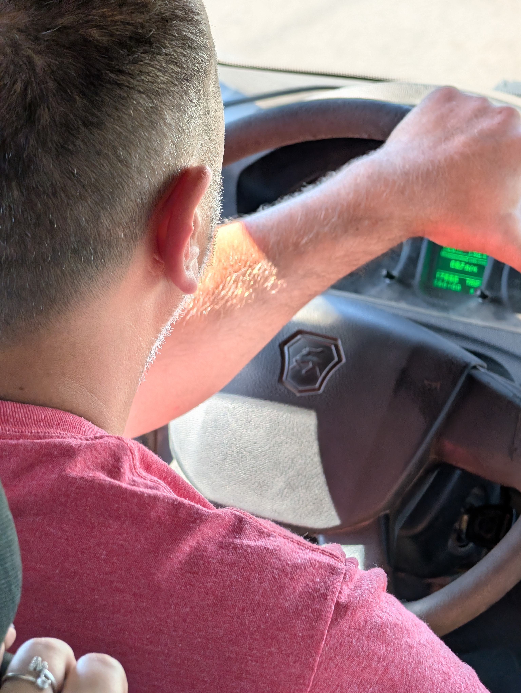
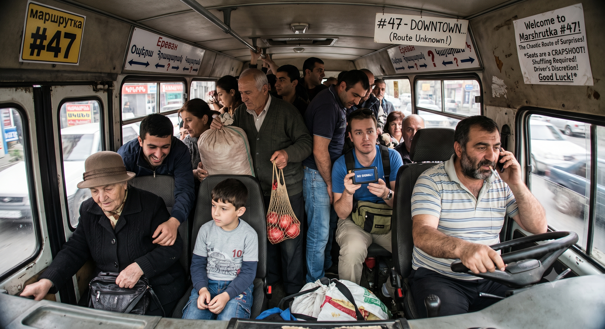

Marshrutka Roulette
Written in Gyumri, Armenia • June 2026
After traveling through many different countries, I can safely say that Armenia is the only one where you can board a numbered bus route and still have absolutely no idea what route it is going to take.

There are two specific buses I regularly take to get downtown. It’s a six-kilometer journey; I could potentially walk it, but I usually opt for the chaotic 20-to-30-minute ride crammed inside a Russian minibus resembling a counterfeit Mercedes Sprinter. I have boarded these exact routes maybe ten times already, and not once have they taken the same path there or back. I have absolutely no idea why. My best guess is that the drivers just choose whatever roads strike their fancy, provided they eventually arrive at the final endpoint downtown. Except, they don't always arrive at the exact same endpoint downtown. Sometimes they drop me a full kilometer away; sometimes it’s just a few blocks short.
What makes taking these minibuses truly chaotic is the internal logistics. Once you’re inside, you have to shuffle. You constantly shuffle back and forth to let people squeeze in and out. You shuffle to let some folks sit, and to let others stand. Truly, I have no idea who actually gets priority for a seat. I’ve watched ten-year-olds claim seats and refuse to stand up for older folks, and I’ve seen older folks stand up specifically to let ten-year-olds sit down. There is no clear social contract here. Sometimes women let men sit; sometimes men let women sit. It’s an absolute crapshoot who is getting a seat and who isn’t.

If you are standing, all bets are off. The van could suddenly halt to let ten people pile on, or five people might squeeze out at a phantom stop that doesn't actually exist. Sure, you can risk it and try to sit shotgun next to the driver by entering through the front door, but those two prime seats are usually already taken. Besides, you have no idea what the driver is doing or saying. Sometimes he yells out the approaching stops, sometimes he's deep in conversation with his girlfriend on the phone, and sometimes he’s just quietly smoking a cigarette. You have absolutely zero clue what is going to happen, or when.
To make matters infinitely more complicated, you will quickly notice that your phone's GPS doesn’t work properly inside the metal shell of these counterfeit Sprinter vans. And because you’re standing upright in a tall van, you can’t even look out the windows to orient yourself—only the seated folks have visual access to the outside world. Add a healthy dose of motion sickness to the mix, and it becomes a whole lot of fun riding in these marshrutkas, as they call them around here.